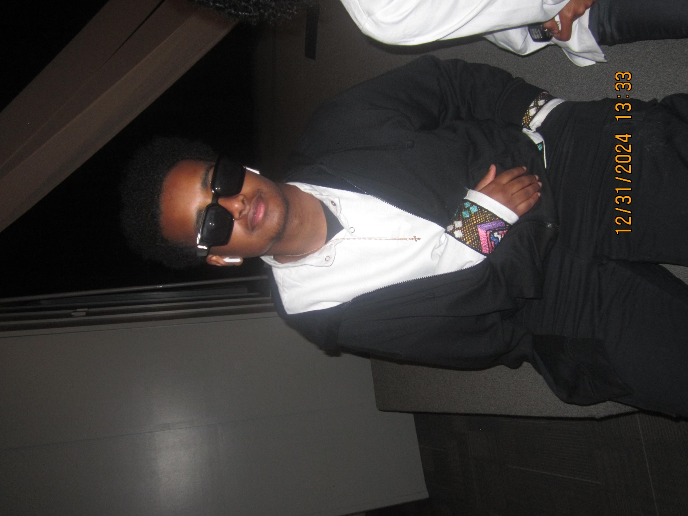

Meet the Designer: Nathan Tegegne
Nathan Tegegne is the visionary behind UrbanThreadz Apparel, a brand built on creativity, identity, and cultural influence. Known for his bold ideas and unique artistic perspective, Nathan designs clothing that connects with people on a personal level—turning everyday streetwear into a powerful form of expression.
Growing up surrounded by diverse styles, music, and global fashion trends, Nathan developed a passion for creating looks that challenge traditional boundaries. His designs blend modern street culture with meaningful messages about confidence, individuality, and where you come from.
At UrbanThreadz, Nathan’s goal is simple: make fashion that speaks. Each piece is crafted not just to be worn, but to inspire. Whether he’s sketching new concepts, experimenting with logos, or testing fabrics, Nathan brings heart, detail, and authenticity to everything he creates.
As UrbanThreadz continues to grow, Nathan remains dedicated to producing clothing that represents community, creativity, and purpose—one design at a time.